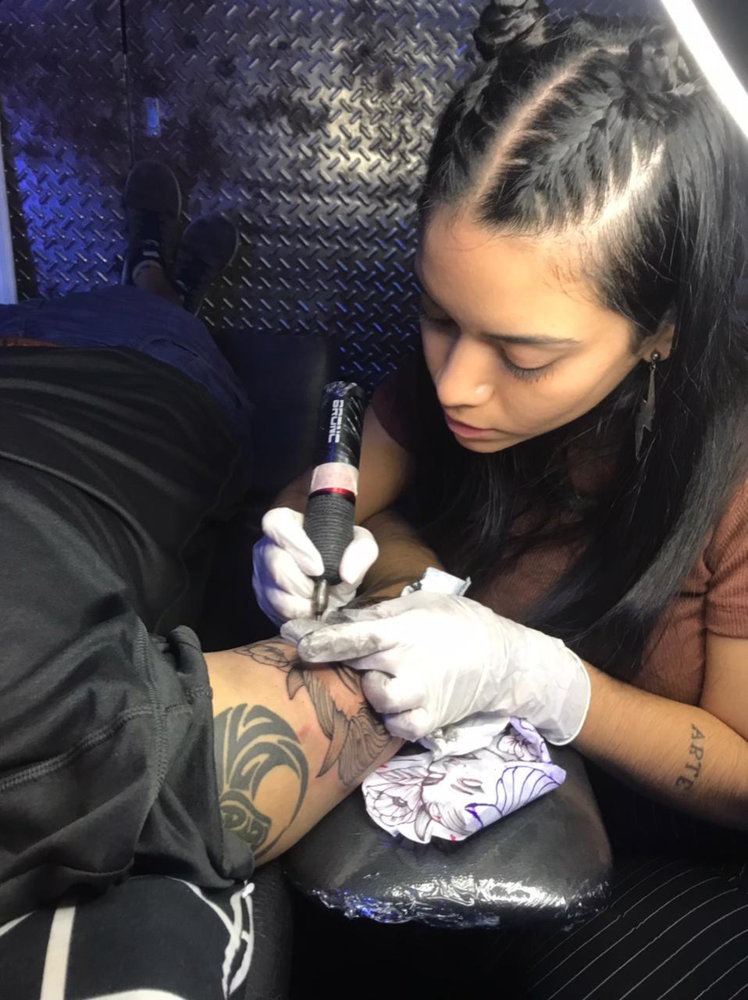

Soy Aldi Ayarzabal, tengo 24 años y soy de Córdoba Argentina. Me inicié en el
mundo
del
tatuaje hace
aproximadamente cuatro años. Comencé de manera autodidacta, viendo videos, buscando información
en
internet
y consutandole a amigos tatuadores. Fui complementando la formación con diferentes seminaros y
talleres
sobre determinados estilos de tatuaje, piercing, dibujo y bioseguridad.
Si bien no me dedico a un estilo en particular, tengo preferencia por el
Blackwork
(tatuajes
en negro) con
técnica de puntillismo de arrastre.
Los invito a ver mis diseños y a sentirse cómodos de dejar sus comentarios,
consultas
o
sugerencias.

RECOMENDACIONES
SUGERENCIAS A LA HORA DE REALIZARSE UN TATUAJE
Siempre asegúrate de visitar un estudio de tatuajes limpio y seguro.
Asegúrate de hacer una buena investigación sobre el diseño de tu tatuaje.
Haz una cita con el tatuador con anticipación.
Descansa y come bien antes de tu sesión de tatuaje.
Puedes tomar un ibuprofeno para el dolor antes de tu sesión de tatuaje.
Si tienes alguna pregunta sobre tu tatuaje, siempre puedes preguntar al tatuador.
CUIDADOS QUE SE DEBEN LLEVAR A CABO PARA EL CORRECTO CURADO DE UN TATUAJE
Asegúrate de mantener tu tatuaje limpio y seco. Lava el tatuaje suavemente con agua
tibia y
jabón neutro dos veces al día.
Usa una crema hidratante para tatuajes recién hechos para evitar que se seque o se
estropee.
Evita exponer a tu tatuaje a la luz solar directa durante un tiempo. La luz solar
puede
dañar tu tatuaje y hacer que se desvanezca.
Evitar el contacto con agua clorada durante los primeros días.
No rascar o tocar el tatuaje. Esto puede causar infecciones o empeorar la
cicatrización.
Evitar la presencia de líquidos corporales (sudor, lágrimas, etc.) en el tatuaje
durante
el
proceso de curación.
Si el tatuaje comienza a ponerse rojo, inflamarse, enrojecerse, picar, consulta con
tu
tatuador/a.